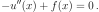
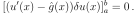
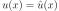
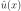

3.42. Variational Formulation of PDEs¶
Not every equation allows a variational formulation (e.g., Navier-Stokes or Euler equations do not have such a formulation), but many equations have one, and we explain how it works on several examples.
3.42.1. Poisson Equation¶
The Lagrangian for Poisson equation is:
The variational formulation is:
which yields:
(3.42.1.1)¶
where we applied integration by parts.
This equation holds for any  , and in particular it holds for
, and in particular it holds for
 at the boundary (i.e., for
at the boundary (i.e., for  and
and
 ). Then the boundary term in (3.42.1.1) vanishes and we
obtain:
). Then the boundary term in (3.42.1.1) vanishes and we
obtain:
(3.42.1.2)¶
This equation holds for any that is zero at the boundary, and
thus it implies:
(3.42.1.3)¶
Now we substitute (3.42.1.3) into (3.42.1.1) and obtain:
(3.42.1.4)¶
Thus (3.42.1.1) implies both (3.42.1.3) and (3.42.1.4).
The equation (3.42.1.4) holds for any (generally
not zero at the boundary) and thus it implies:
(3.42.1.5)¶
at the boundary. Thus  imposes the Neumann boundary condition, i.e.,
the value of the derivative at the boundary. This condition
is imposed variationally.
imposes the Neumann boundary condition, i.e.,
the value of the derivative at the boundary. This condition
is imposed variationally.
To impose a Dirichlet boundary condition, we want to impose the value of
 at the boundary for some constant . As such,  is not allowed to vary at that part of the boundary, which means that the
variation at the boundary. So we restrict the variation
to be zero at the Dirichlet part of the boundary in
(3.42.1.1) and thus also in (3.42.1.4). This implies that
(3.42.1.5) does not hold at the Dirichlet part of the boundary
and we have to set the value there directly.
is not allowed to vary at that part of the boundary, which means that the
variation at the boundary. So we restrict the variation
to be zero at the Dirichlet part of the boundary in
(3.42.1.1) and thus also in (3.42.1.4). This implies that
(3.42.1.5) does not hold at the Dirichlet part of the boundary
and we have to set the value there directly.
3.42.2. Radial Schrödinger Equation¶
The derivation is similar as for the Poisson equation, except that we have based on physical reasoning (that we cannot set the derivative to a given value, or, alternatively, that we require the operator to be self-adjoint).
The Lagrangian for the radial Schrödinger equation is:
(3.42.2.1)¶![L[R] = \int_0^\infty \left[\half R'^2(r)
+ \left(V(r) + {l(l+1)\over 2 r^2}\right) R^2(r) \right] r^2 \,\d r\,.](../_images/math/2b9c9cca738f32504e65df99d622c8834ff76b40.svg)
We minimize the Lagrangian subject to the normalization condition
![N[R] = \int_0^\infty R^2(r) r^2\, \d r = 1](../_images/math/8d9a7a138eb031f36f006a0453dfee7a4a64105e.svg) as follows:
as follows:
(3.42.2.2)¶![0 &= \delta (L - \epsilon (N-1))
&= \delta \int_0^\infty \left[ \half r^2 R'^2
+ (r^2 V + \half l(l+1)) R^2 - \epsilon r^2R^2 \right] \,\d r =
&= 2\int_0^\infty \left[ \half r^2 R'(\delta R)'
+ (r^2 V + \half l(l+1)) R\delta R - \epsilon r^2 R\delta R \right]
\,\d r =
&= 2\int_0^\infty \left[ -\half (r^2 R')'
+ (r^2 V + \half l(l+1)) R - \epsilon r^2 R\right]\delta R \,\d r
+ [r^2 R' \delta R]_0^\infty](../_images/math/c0e0496ba1a98425fa64e7c04c9406cbbe9a9f0c.svg)
This equation holds for any  , and so it also holds when we
restrict
, and so it also holds when we
restrict  on the boundary and the boundary term vanishes. Then
it implies the radial Schrödinger equation:
on the boundary and the boundary term vanishes. Then
it implies the radial Schrödinger equation:
(3.42.2.3)¶
Substituting (3.42.2.3) into (3.42.2.2) we obtain:
(3.42.2.4)¶![[r^2 R' \delta R]_0^\infty = 0](../_images/math/9a5759ac43f764d174c9fcc18aaa01816c725b9e.svg)
And we can see that (3.42.2.2) implies both the equation
(3.42.2.3) and the boundary term (3.42.2.4). The
boundary term is zero for  , so it reduces to:
, so it reduces to:
(3.42.2.5)¶
We can see that there is no natural condition at , and for  we
only have two possible options. Either we impose
we
only have two possible options. Either we impose  and
obtain the Dirichlet condition and the boundary term
(3.42.2.5) vanishes. Or we allow
and
obtain the Dirichlet condition and the boundary term
(3.42.2.5) vanishes. Or we allow  to vary,
and then (3.42.2.5) implies
to vary,
and then (3.42.2.5) implies  .
.
Unlike for the Poisson equation we are not allowed to set  to
anything other than zero, and that’s why (3.42.2.1) has no surface
term.
to
anything other than zero, and that’s why (3.42.2.1) has no surface
term.